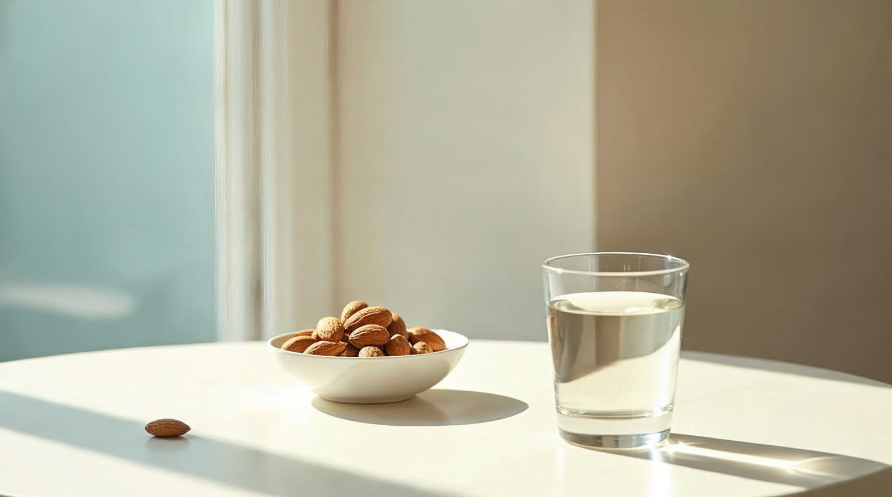
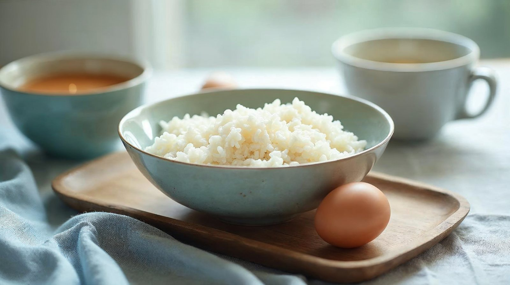

이종호 한의사 감수좋은꿈참사랑한의원 대표원장 (한의사 면허번호 19769)발행 2026-11-22 · 수정 2026-11-26
이 글의 차례
- 진짜 배고픔과 가짜 허기는 무엇이 다른가요
- 왜 이런 불편이 생길 수 있나요
- 왜 저녁과 밤에 더 당길까요
- 먼저 이렇게 여쭙니다
- 일상에서 먼저 해 볼 수 있는 것
- 물 마시고 10분 기다리기는 이렇게 해 보세요
- 잠과 허기는 어떻게 이어지나요
- 허기 점수는 어떻게 매기나요
- 마음이 허기로 바뀔 때는 어떻게 할까요
- 식사 구성도 포만감에 영향을 줍니다
- 간식을 먹는다면 어떻게 고를까요
- 상황별 예시
- 스스로 점검해 보세요
- 한의원에서 함께 살필 수 있는 경우
- 첫 방문 때 어떤 이야기를 나누나요
- 이렇게 기록해 오시면 상담이 쉬워집니다
- 얼마나 지켜보고 언제 상담할까요
- 이런 증상은 먼저 확인이 필요합니다
- 관련 글
물을 한 잔 마시고 10분을 기다린 뒤에도 무엇이든 먹고 싶다면 진짜 배고픔에 가깝다고 볼 수 있습니다. 식사를 한 지 얼마 되지 않았는데 입이 심심하거나 스트레스를 받을 때 먹고 싶어지는 경우가 있습니다. 배고픔의 모양을 구분해 보면 식욕을 다루기가 한결 수월해질 수 있습니다.
진짜 배고픔은 몸이 에너지를 채워 달라는 신호이고, 가짜 허기는 마음이나 습관, 잠 부족이 먹고 싶다는 느낌으로 바뀌어 찾아오는 경우를 말합니다. 둘 다 실제로 느끼는 감각이라 어느 한쪽이 잘못된 것은 아닙니다. 다만 대하는 방법이 달라서, 구분해 보는 연습이 식사 조절의 첫걸음이 됩니다.
진료실에서 식욕 이야기를 나누다 보면 "제가 의지가 약해서요"라는 말을 자주 듣습니다. 저는 그 말을 들을 때마다 의지보다 먼저 살펴볼 것이 많다고 말씀드립니다. 언제, 어떤 기분일 때 먹고 싶은지를 알아차리는 것만으로도 다루는 방법이 달라지기 때문입니다.
진짜 배고픔과 가짜 허기는 무엇이 다른가요
- 오는 속도: 진짜 배고픔은 몇 시간에 걸쳐 서서히 커지고, 가짜 허기는 어떤 장면이나 기분을 만나 갑자기 찾아오는 경우가 많습니다.
- 몸의 느낌: 진짜 배고픔은 배에서 꼬르륵 소리가 나거나 기운이 빠지는 느낌이 함께 오고, 가짜 허기는 입이나 머릿속에서 먼저 시작되는 느낌이 큽니다.
- 먹고 싶은 것: 진짜 배고픔은 밥이든 반찬이든 무엇이든 괜찮지만, 가짜 허기는 달거나 짜고 바삭한 특정 음식이 또렷하게 떠오릅니다.
- 기다릴 수 있는지: 진짜 배고픔은 20~30분 기다려도 그대로이거나 커지고, 가짜 허기는 다른 일에 몰두하면 사그라드는 경우가 있습니다.
- 먹은 뒤: 진짜 배고픔은 적당히 먹으면 편안히 멈출 수 있고, 가짜 허기는 배가 불러도 손이 계속 가거나 먹고 나서 후회가 남기 쉽습니다.
이 구분은 칼로 자르듯 나뉘지 않습니다. 끼니를 거른 날 스트레스까지 겹치면 두 가지가 함께 오기도 해, 기준 하나보다 여러 단서를 함께 보시면 됩니다.
처음 며칠은 구분이 잘 안 되는 것이 당연합니다. 먹고 싶을 때마다 "언제 마지막으로 먹었지, 지금 기분은 어떻지" 두 가지만 떠올려 보세요. 그 두 질문이 손에 익으면 나머지 단서도 자연스럽게 눈에 들어오고, 먹을지 말지를 스스로 고르는 여유가 조금씩 생깁니다.
왜 이런 불편이 생길 수 있나요
- 잠이 부족하면 식욕을 조절하는 신호가 흔들려 배가 부른데도 단 음식이 당기는 경우가 있습니다.
- 스트레스, 지루함, 외로움 같은 감정이 먹고 싶다는 느낌으로 바뀌어 찾아오기도 합니다.
- 끼니 간격이 너무 길면 진짜 허기가 한꺼번에 몰려와 빠르게 많이 먹게 되기 쉽습니다.
- 목마름을 배고픔으로 착각하거나, 습관처럼 정해진 시간에 간식을 찾는 경우도 있습니다.
왜 저녁과 밤에 더 당길까요
- 낮 동안 끼니를 대충 넘기거나 양이 적으면, 저녁에 몸의 허기와 하루의 피로가 한꺼번에 몰려옵니다.
- 일과가 끝나고 긴장이 풀리는 시간에는 수고한 나를 달래고 싶은 마음이 먹는 것으로 이어지기 쉽습니다.
- 늦게까지 깨어 있으면 깨어 있는 시간만큼 입이 심심해지고, 피곤할수록 빨리 기운을 내는 단 음식이 당깁니다.
- 텔레비전이나 휴대전화를 보며 먹으면 먹은 양을 몸이 덜 알아채 포만감이 늦게 옵니다.
그래서 밤의 간식을 줄이고 싶을 때 밤만 붙잡기보다 아침과 점심을 제때 챙기는 것부터 바꿔 보시길 권합니다. 낮의 식사가 안정되면 저녁의 허기도 한결 다루기 쉬워지는 경우가 많습니다.

먼저 이렇게 여쭙니다
- 마지막으로 식사한 지 몇 시간이 지났나요?
- 먹고 싶은 것이 특정한 음식인가요, 아무거나 괜찮은가요?
- 먹고 싶을 때 기분은 어땠나요? (지루함, 스트레스, 외로움 등)
- 물을 한 잔 마신 뒤에도 같은 느낌이 이어지나요?
- 먹고 나서 만족감이 오래가나요, 금방 다시 허전한가요?
일상에서 먼저 해 볼 수 있는 것
- 먹고 싶을 때 물을 마시고 10분 기다려 보기
- 허기 정도를 1~5 단계로 기록하기
- 식사 사이 간격이 너무 길지 않게 하기
- 기분이 이유라면 걷기나 호흡으로 먼저 풀어 보기
- 간식이 당기는 시간대에는 산책이나 통화처럼 다른 할 일을 미리 정해 두기
- 식사는 천천히, 20분 이상 들여 먹어 포만감이 따라올 시간을 주기
- 한 입 먹을 때마다 숟가락을 잠깐 내려놓고 꼭꼭 씹어 맛을 느껴 보기
- 장 볼 때는 배가 부른 상태에서 미리 적어 둔 목록대로 사기
- 늦은 저녁 약속이 있는 날은 오후에 가벼운 간식을 먼저 챙겨 두기
물 마시고 10분 기다리기는 이렇게 해 보세요
- 먹고 싶다는 생각이 들면 먼저 물이나 따뜻한 차를 한 잔 천천히 마십니다.
- 타이머를 10분에 맞추고, 그동안 자리에서 일어나 다른 일을 하나 합니다. 설거지, 짧은 산책, 책상 정리처럼 손이 가는 일이 좋습니다.
- 10분 뒤 다시 허기 점수를 매겨 봅니다. 그대로이거나 올랐다면 진짜 배고픔일 가능성이 크니 제대로 된 식사나 간식을 드세요.
- 점수가 내려갔다면 그 장면을 기록해 둡니다. 비슷한 장면이 반복되면 그 시간에 미리 다른 할 일을 정해 둘 수 있습니다.
이 방법은 참으라는 뜻이 아니라 알아차릴 틈을 만드는 방법입니다. 배가 고픈데 억지로 버티면 다음 끼니에 오히려 많이 먹게 되기 쉬우니, 진짜 배고픔이라면 편하게 드시면 됩니다.
잠과 허기는 어떻게 이어지나요
잠을 적게 잔 다음 날 유난히 단 것과 기름진 것이 당긴다는 분이 많습니다. 잠이 모자라면 배부름을 알리는 신호는 약해지고 배고픔을 알리는 신호는 커진다고 알려져 있어, 같은 사람도 잠을 설친 날에는 허기를 더 크게 느끼기 쉽습니다.
또 깨어 있는 시간이 길어질수록 먹을 기회도 늘어납니다. 그래서 밤늦은 간식이 고민이라면 간식보다 잠드는 시각을 먼저 조금 당겨 보시길 권합니다. 잠자리에 들기 한 시간 전부터 조명을 낮추고 화면을 내려놓는 것부터 시작해 볼 수 있습니다.
허기 점수는 어떻게 매기나요
먹고 싶은 순간마다 지금의 허기를 1에서 5까지 숫자로 매겨 봅니다. 처음에는 어색해도 며칠 해 보면 내 몸의 신호를 읽는 감이 생깁니다.
- 1점: 배가 불러 더 먹으면 불편하다
- 2점: 배는 고프지 않은데 무언가 먹고 싶다
- 3점: 조금 출출하지만 한두 시간은 기다릴 수 있다
- 4점: 배가 고프고 집중이 잘 안 된다
- 5점: 기운이 빠지고 아무것도 손에 잡히지 않을 만큼 배고프다
3~4점일 때 식사를 시작하고, 2점이라면 물을 마시거나 잠깐 움직여 본 뒤 다시 매겨 보세요. 5점까지 참았다 먹으면 빠르게 많이 먹게 되기 쉬우니, 그 전에 식사 시간을 잡아 두는 것이 좋습니다.
마음이 허기로 바뀔 때는 어떻게 할까요
지루하거나 속상한 날 먹는 것은 많은 분이 쓰는 위로 방법입니다. 먹는 동안은 잠시 마음이 가라앉기 때문에, 이 방법을 무작정 빼앗기보다 다른 위로를 하나씩 곁에 두는 쪽을 권합니다.
- 먹고 싶을 때 "지금 내가 원하는 게 음식인가, 쉼인가, 위로인가"를 한 번 물어봅니다.
- 쉼이 필요하다면 5분 눈 감고 앉기, 창밖 보기, 따뜻한 차 한 잔을 먼저 해 봅니다.
- 답답함이 크다면 밖에 나가 10분쯤 걷거나 가까운 사람에게 짧게 연락해 봅니다.
- 그래도 먹고 싶다면 접시에 덜어 앉아서, 화면을 끄고 천천히 맛을 보며 먹습니다.
먹었다고 해서 자신을 탓할 필요는 없습니다. 어떤 장면에서 먹었는지 적어 두는 것만으로도 다음번에는 한 박자 늦게 알아차리는 힘이 생깁니다.
식사 구성도 포만감에 영향을 줍니다
- 밥이나 빵만으로 끼니를 때우면 금방 다시 허기가 오기 쉬워, 단백질 반찬과 채소를 함께 곁들여 봅니다.
- 단 음료는 배가 부른 느낌을 거의 주지 않아, 목이 마를 때는 물이나 보리차를 먼저 마십니다.
- 국물만 먹고 건더기를 남기기보다 씹을 거리를 충분히 먹으면 포만감이 오래 갑니다.
- 아침을 거르는 습관이 있다면 삶은 달걀이나 우유처럼 간단한 것부터 시작해 봅니다.
간식을 먹는다면 어떻게 고를까요
간식을 아예 끊기보다 먹는 방법을 바꾸면 마음의 부담도 덜하고 오래 지키기 쉽습니다.
- 봉지째 들고 먹기보다 먹을 만큼만 그릇에 덜어 나머지는 치워 둡니다.
- 집에 늘 보이는 자리에 과자를 두지 말고, 과일이나 견과류처럼 씹을 거리가 있는 것을 눈에 띄는 곳에 둡니다.
- 하루 간식 시간을 한두 번 정해 두면 "언제든 먹을 수 있다"는 생각이 줄어 오히려 덜 당기기도 합니다.
- 먹을 때는 다른 일을 멈추고 맛과 식감에 집중합니다. 같은 양이라도 만족감이 달라집니다.
상황별 예시
- 예를 들어 회의가 길어져 점심을 오후 3시에 먹는 직장인이라면, 퇴근길에 허기가 몰려 저녁을 급하게 많이 먹기 쉽습니다. 오전에 견과류 한 줌이나 우유처럼 가벼운 것을 챙겨 끼니 간격을 줄여 봅니다.
- 예를 들어 밤늦게 공부하는 수험생이 자정 무렵마다 라면이 떠오른다면, 졸음과 피로가 허기처럼 느껴지는 경우일 수 있습니다. 따뜻한 물을 마시고 잠깐 일어나 몸을 푼 뒤에도 배가 고픈지 다시 살펴봅니다.
- 예를 들어 아이를 재우고 난 뒤에야 겨우 혼자 시간이 나는 부모라면, 그 시간에 먹는 간식이 쉼의 역할을 하고 있을 수 있습니다. 먹는 것 대신 짧은 샤워나 차 한 잔처럼 나를 위한 다른 쉼을 하나 정해 두세요.
- 예를 들어 재택근무를 하며 냉장고 앞을 자주 지나가는 경우라면, 일하는 자리를 부엌에서 조금 떨어진 곳으로 옮기고 정해 둔 간식 시간 외에는 물병을 책상에 두어 봅니다.
스스로 점검해 보세요
- 식사한 지 두 시간이 안 됐는데 자주 무언가 먹고 싶다
- 특정 음식(과자, 빵, 단 음료)이 머릿속에 또렷하게 떠오른다
- 스트레스를 받거나 지루할 때 먹는 횟수가 늘어난다
- 휴대전화나 텔레비전을 보며 먹다 보면 양을 잘 모른다
- 배가 불러도 손이 계속 간다
- 잠을 적게 잔 다음 날 간식이 더 당긴다
- 먹고 나면 후회나 죄책감이 남는다
여러 항목에 해당한다면 의지를 탓하기보다, 먹고 싶어지는 장면이 언제인지부터 기록해 보세요. 장면이 보이면 바꿀 곳도 함께 보입니다.

한의원에서 함께 살필 수 있는 경우
- 배가 고픈지 헷갈리고 자주 먹게 되는 경우 식사 리듬과 생활을 함께 살핍니다.
- 스트레스를 받을 때 먹고 싶은 경우 긴장과 식욕의 관계를 함께 살핍니다.
- 식사 뒤에도 허전한 경우 소화와 식사 구성을 함께 살핍니다.
좋은꿈참사랑한의원에서는 먼저 식사와 잠, 활동량을 충분히 듣고 맥을 짚은 뒤, 검진 결과지가 있으면 함께 읽으며 필요하다고 판단될 때 인바디로 몸의 구성을 확인합니다. 그 뒤 생활 계획과 한약 상담 등 맞는 방법을 함께 정하고, 진단이나 약 조절이 필요하면 내과 진료를 안내합니다.
첫 방문 때 어떤 이야기를 나누나요
진료실에서는 무엇을 얼마나 먹는지보다 언제, 어떤 기분일 때 먹고 싶어지는지를 먼저 여쭙습니다. 하루의 식사 시간과 잠든 시각, 일어난 시각, 낮 동안 움직인 양을 함께 들으면 허기가 몰리는 시간과 이유가 조금씩 보입니다.
맥을 짚는 것은 모든 분께 하는 기본이고, 소화가 잘 되는지, 속이 쓰리거나 더부룩한지, 대변은 어떤지도 함께 여쭙니다. 속이 불편해 식사를 제대로 못 하고 간식으로 버티는 경우도 있어서입니다. 한약 상담을 하게 되면 지금 드시는 약과 영양제를 먼저 확인합니다.

이렇게 기록해 오시면 상담이 쉬워집니다
- 먹고 싶었던 시각과 그때의 기분(1~5단계 허기 점수와 함께)
- 마지막 식사 시각과 메뉴
- 전날 잔 시간
- 먹은 뒤 기분과 포만감이 얼마나 이어졌는지
- 물 마시고 10분 기다린 뒤 허기 점수가 어떻게 달라졌는지
- 복용 중인 약과 영양제, 최근 늘거나 줄어든 체중
얼마나 지켜보고 언제 상담할까요
- 물 마시고 10분 기다리기와 허기 점수 기록을 2~3주 이어 가며, 먹고 싶은 장면이 언제 반복되는지 살펴봅니다.
- 기록을 해도 하루 여러 번 참기 힘든 허기가 이어지거나, 먹는 일로 마음이 자주 무거워진다면 상담을 받아 보세요.
- 잠이 부족하거나 스트레스가 큰 시기라면 식욕만 따로 보기보다 잠과 긴장을 함께 살펴보시길 권합니다.
이런 증상은 먼저 확인이 필요합니다
- 갑자기 식욕이 폭발하거나 먹어도 계속 배가 고픈 경우
- 몹시 목이 마르고 소변이 많아지는 경우
이런 신호가 있으면 한의원보다 가까운 병원이나 응급실을 먼저 찾으세요.
관련 글
- 속상하거나 지친 날이면 배가 고프지 않아도 계속 먹게 되는 감정적 폭식은 어떻게 살피나요?
- 야식을 끊기 어려울 때는 어떤 점을 먼저 살펴보나요?
- 폭식 충동이 올 때는 어떤 점을 먼저 살펴보나요?

여쭙는 것
- 마지막으로 식사한 지 몇 시간이 지났나요?
- 먹고 싶은 것이 특정한 음식인가요, 아무거나 괜찮은가요?
- 먹고 싶을 때 기분은 어땠나요? (지루함, 스트레스, 외로움 등)
생활에서 해 볼 것
- 먹고 싶을 때 물을 마시고 10분 기다려 보기
- 허기 정도를 1~5 단계로 기록하기
- 식사 사이 간격이 너무 길지 않게 하기
한의원에서 함께 살필 것
- 배가 고픈지 헷갈리고 자주 먹게 되는 경우 식사 리듬과 생활을 함께 살핍니다.
- 스트레스를 받을 때 먹고 싶은 경우 긴장과 식욕의 관계를 함께 살핍니다.
- 식사 뒤에도 허전한 경우 소화와 식사 구성을 함께 살핍니다.
먼저 확인이 필요한 신호
- 갑자기 식욕이 폭발하거나 먹어도 계속 배가 고픈 경우
- 몹시 목이 마르고 소변이 많아지는 경우
한눈에 보는 표
| 구분 | 핵심 |
|---|---|
| 여쭙는 것 | 마지막으로 식사한 지 몇 시간이 지났나요? 먹고 싶은 것이 특정한 음식인가요, 아무거나 괜찮은가요? |
| 생활에서 해 볼 것 | 먹고 싶을 때 물을 마시고 10분 기다려 보기 허기 정도를 1~5 단계로 기록하기 |
| 한의원에서 함께 살필 것 | 배가 고픈지 헷갈리고 자주 먹게 되는 경우 식사 리듬과 생활을 함께 살핍니다. 스트레스를 받을 때 먹고 싶은 경우 긴장과 식욕의 관계를 함께 살핍니다. |
| 먼저 확인이 필요한 신호 | 갑자기 식욕이 폭발하거나 먹어도 계속 배가 고픈 경우 몹시 목이 마르고 소변이 많아지는 경우 |
자주 묻는 질문
허기를 참아야 하나요?
참기보다 허기의 종류를 구분해 대응하는 것을 권합니다.
간식을 완전히 끊어야 하나요?
식사와 간격, 양을 조절하는 쪽을 권하는 경우가 많습니다.
한의원에서는 무엇을 보나요?
식사 시간, 잠, 스트레스, 소화를 함께 묻고 식욕의 모양을 살핍니다.
밤마다 단 음식이 당기는 건 의지가 약해서인가요?
의지만의 문제는 아닌 경우가 많아, 낮의 식사 간격과 잠, 스트레스를 함께 살펴 한 가지씩 바꿔 보도록 안내합니다.
좋은꿈참사랑한의원은 재진 때 지난번 이야기부터 이어서 여쭙니다. 진료시간과 예약은 오시는 길에서 확인하세요.
어디서 상담받을 수 있나요?
좋은꿈참사랑한의원은 서울 동작구 만양로2길 2 신성빌딩 3층·5층(서울 동작구 상도동, 7호선 상도역 3번 출구 근처)에 있습니다. 한의사 3명(이종호 대표원장, 조영기 수석진료원장, 정원영 진료원장)이 진료합니다. 진료시간은 평일 09:30~20:00(점심 13:00~14:00), 토·일·공휴일 09:30~15:00이며, 방문 전 전화로 확인을 권합니다. 예약은 네이버 예약, 카카오톡 상담, 전화 02-815-7510로 받습니다.
이 글은 일반적인 건강 정보이며 개인의 진단이나 치료를 대신하지 않습니다. 증상이 있거나 복용 중인 약이 있다면 진료를 통해 확인하세요. 치료 효과는 개인마다 다를 수 있습니다.
작성 기준: 일반적으로 알려져 있는 건강 정보를 참고해 정리했습니다(대표원장 감수). 증상 기록은 1~2주 동안 하루 1회, 비슷한 시간에 적어 오시면 지난 상태와 비교하기 쉽습니다.